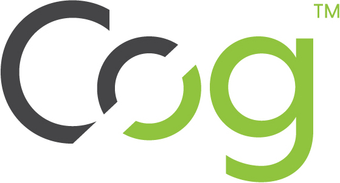
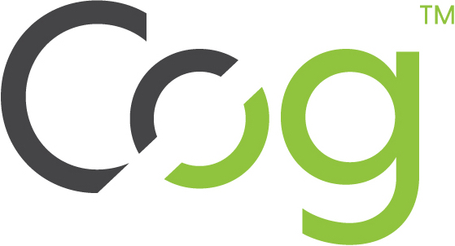

The seL4 Foundation has commenced providing interim endorsement for trusted service providers for seL4. These may apply to consulting and development services as well as for training. In a first step, the Foundation has given interim endorsement to the following trusted service providers (in the order of approval):
Interim endorsement is intended to lead to full certification; the Foundation will work with interim endorsees and the general membership on developing certification schemes. More detail.